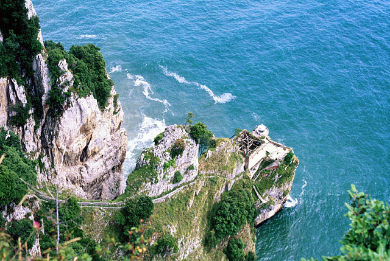

UN PASEO POR SANTOÑA |
|
 FARO DEL CABALLO.- Se accede por tierra a través de una escarpada escalinata de 682 peldaños (construidos por los presos del penal del Dueso), de gran desnivel que baja en planta de herradura por el borde de los grandes escarpes. También se puede acceder desde el mar cuando el estado de la misma permite atracar teniendo que subir, en tal caso, 111 peldaños más cómodos que los anteriores. |